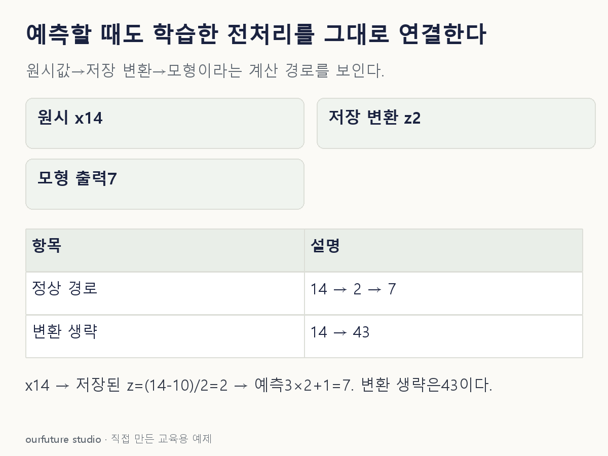

조건을 바꾸며 확인하기
고정 저장값10·2와 선형식의 산술이다. 요청마다 fit하거나 실제 모형 성능을 평가하지 않는다.
설명 그림과 비교하기
아래 그림과 표는 고정된 설명 예제입니다. 기본·변형 중 어떤 조건인지 캡션을 읽고, 바꾼 입력의 결과는 계산 칸에서 확인하세요.

같은 문제를 직접 골라 보기
저장된 전처리는 z=(x−10)/2, 모형은 ŷ=3z+1이다. 운영 입력 x=14에 같은 파이프라인을 적용한다.
조건을 더 바꾸면?
학습한 변환과 모형을 그대로 두고 운영 입력만 x=10으로 바꾸면 출력은?
변형 풀이 확인
z=0이고 ŷ=1이다.
(10−10)/2=0, 3×0+1=1이다. 입력 하나가 달라졌을 뿐 평균·표준편차를 새로 학습하지 않는다.
새 입력에는 fit 말고 저장한 transform.